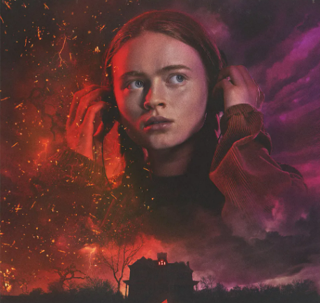

일레븐(엘) / 제인
Eleven(El) / Jane배우 : 밀리 바비 브라운
윌의 실종과 함께 나타난 소녀. 스토리의 중요한 점들을 꿰뚫고 있는 인물이며 사실상 진주인공이다. 기묘한 이야기 자체가 일레븐의 성장물이라고 볼 수도 있다. 짧게 깎은 머리에 일반적인 상식도 없는 의문스러운 모습을 보인다. 일레븐이라는 호칭도 이름이 아닌, 일종의 코드 네임이나 번호로 추정되는 "011" 문신에서 비롯된 것. 과학 서클 멤버들은 줄여서 엘(El)이라고 부른다. 친모인 테리 아이브스가 붙여준, 일상생활에서 대외적으로 사용하는 이름은 '제인'.
마이크 윌러
Micheal "Mike" Wheeler배우 : 핀 울프하드
윌이 사라지자 어른들과 별개로 윌을 찾으러 나섰다가 일레븐과 만나 그녀를 집으로 데려온다. 처음에는 그냥 길 잃은 소녀인 줄로만 알고 다음 날 아침에 경찰에 넘기려 했지만, 그녀가 불안해하는 모습에 그러지 않고 며칠 동안 집의 지하실에 그녀를 숨겨 두고 돌봐주게 된다. 그리고 이때 통성명 과정에서 11이라는 숫자를 뜻하는 일레븐의 이름을 듣고 이상하다고 생각하여 '엘'이라고 애칭을 지어준다.
윌리엄 윌 바이어스
William "Will" Byers배우 : 노아 슈냅
본작의 발단이 되는 인물. 애칭은 윌. 이혼가정으로 엄마와 형과 함께 외딴집에서 살고 있다. 내성적이고 굉장히 착한 성격으로 친구들을 잘 배려하고 친구와 함께 노는 것을 제일 좋아하는 그 나이 또래의 평범한 아이.
루카스 싱클레어
Lucas Sinclair배우 : 케일럽 맥러플린
마이클의 옆집에 살고 있으며 마이클과 가장 오래 알고 지낸 친구다. 작중에서 가장 현실적이고 감각적인 성향을 지녀 상황을 객관적으로 보는 능력이 뛰어나다. 이 때문에 이상주의적 성향을 가진 마이크와 충돌하는 모습을 자주 보인다. 그러나 가끔 지나치게 냉정히 행동해 다른 사람들에게 상처를 주기도 한다. 참고로 여동생이 있는데 사이가 영 안 좋다.
더스틴 핸더슨
Dustin Henderson배우 : 게이튼 매터래조
다른 멤버들에 비해서 과학 지식도 많고, 말솜씨도 상당해서 과학 서클 4인방 중 브레인을 맡고 있다. 젖니가 빠지고 새 이가 나려는 때라 그런지 새는 발음이 많은 편이다. 행동거지만 보면 친구들 중 가장 유치하지만 실은 가장 속깊은 성격으로 싸움이 생기면 항상 객관적인 입장에서 중재한다.

맥스 메이필드
Maxine "Max" Mayfield배우 : 세이디 싱크
주인공 4총사가 즐기는 게임의 신기록을 갈아치우며 시즌 2에서 첫 등장했다. 어머니의 재혼으로 호킨스에 이사오게 된 소녀로 성격은 까칠한 편이지만 주인공 패거리에 들어오고 싶어한다. 팀 내부에서 마이크가 자신을 소외시키자 불만을 품고 팀에서 나오지만 루카스의 설득을 통해 돌아오고 데모고르곤과의 싸움에 합류한다.